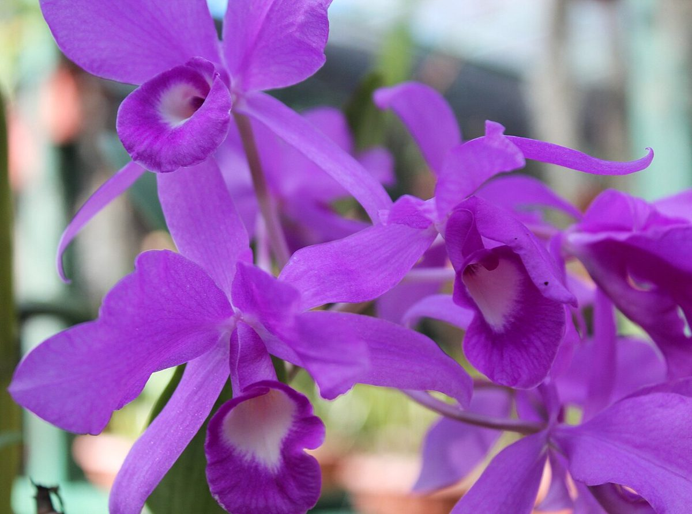

制作側の連想
「ふく」から、吊り下がって咲く花を思った。
店名の由来は分かりません。制作側は「ふく」という音から、うつむくように吊り下がって咲くフクシアという花を連想しました。この花は、赤紫の「ガク」と紫の「花弁」の二色でできています。そこでこのサイトも、見出しをガクの赤紫、本文を花弁の紫で組み立てています。お店の理念・由来とは無関係の、制作側の連想です。
二色のルール
見出しはガク、本文は花弁。
ガク(赤紫)
花弁(紫)に、見出しとラベルを重ねる
このサイトの吊り札は、どれも上が赤紫、下が紫の二層です。写真にフクシアは写っていません。パンや花の写真は、国外・撮影地不明のフリー素材のイメージです。

ぶら下がる写真(イメージ)
長さのちがう糸に吊るして。
お店の写真ではありません。国外・撮影地不明のフリー素材を、吊り下がる花のように並べました。



ご案内
お店のこと(確認できたものだけ)
| 所在地 | 〒857-0854 長崎県佐世保市福石町15-2 |
|---|---|
| 電話 | 0956-55-5219 |
| 営業時間 | 準備中 |
| 定休日 | 準備中 |
| ご予約 | 準備中 |
| 駐車場 | 準備中 |
| SNS | Instagram @fuku.pan |